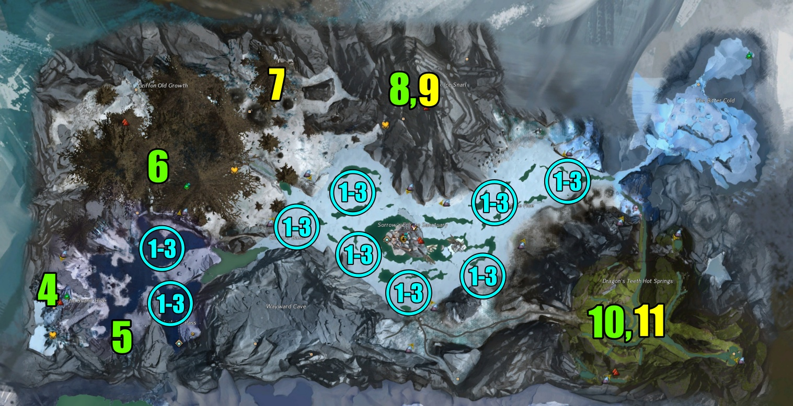

Bitterfrost Frontier

How to: To farm the map, it's a really chill event train. Sorry LOL. Seriously though, to farm this map, you do need to have at least 15 people in order to spawn champions. If there are no champions, the profit does start diminishing pretty fast.
Plan
The map meta is not on a global timer. It is dependent on the instance of the map. As a commander, you could arrive at least 30-50 minutes early to the map (if you plan to start at a specific time) to gauge where the meta is at. The meta could be starting when you get there or start 30 minutes after you arrived. Either way, finding out when the meta did occur is a great thing because now you can track the time using my timer page. Remember that each time the meta finishes, the Icebound Chests respawn. Read more specifically on the meta here. In an hour-ish train, it should be possible to get hit with the meta and be able for the squad to gather 2 rounds of all the Icebound Chests.
In between the meta, follow my recommended priority of events. Some of these events run pretty slow sometimes. All of the braziers of events (when defending) sometimes take a long time to spawn any mobs. When you have to lit the braizer, I recommend only have 2 people put in their torch to start the event. This gives it time and be slow enough to spawn mobs every 25% of the health of the brazier.
For the Quaggan bath and the Chokocooka event, pay attention via timer page for when an event is about to fail or has started back up again. These events have a different time when you finish their fail event and when you complete their non-failed event. In total, there are 4 possible events that can occur, but you only want the 2 events that come after successfully completing the events. Both the failed events of these events are tedious and may not be worth the squad's time.
Plan
The map meta is not on a global timer. It is dependent on the instance of the map. As a commander, you could arrive at least 30-50 minutes early to the map (if you plan to start at a specific time) to gauge where the meta is at. The meta could be starting when you get there or start 30 minutes after you arrived. Either way, finding out when the meta did occur is a great thing because now you can track the time using my timer page. Remember that each time the meta finishes, the Icebound Chests respawn. Read more specifically on the meta here. In an hour-ish train, it should be possible to get hit with the meta and be able for the squad to gather 2 rounds of all the Icebound Chests.
In between the meta, follow my recommended priority of events. Some of these events run pretty slow sometimes. All of the braziers of events (when defending) sometimes take a long time to spawn any mobs. When you have to lit the braizer, I recommend only have 2 people put in their torch to start the event. This gives it time and be slow enough to spawn mobs every 25% of the health of the brazier.
For the Quaggan bath and the Chokocooka event, pay attention via timer page for when an event is about to fail or has started back up again. These events have a different time when you finish their fail event and when you complete their non-failed event. In total, there are 4 possible events that can occur, but you only want the 2 events that come after successfully completing the events. Both the failed events of these events are tedious and may not be worth the squad's time.
Events

Great
Meh
Avoid
Recommendation: Priority of Events
9-10, 12-14, 6, 11, 4, 7-8, 15-16, 17, 5
| # | Qty | Name | Description | Upscale | Extra |
|---|---|---|---|---|---|
| 1 | 9 | Light the Kodan brazier | Take a torch from a brazier and use it on an event brazier to start it. The more Braizers that are lit, the faster (but not too many or it will complete too fast). Spawns if #2 fails | Possible champs, Mob density+ | |
| 2 | 9 | Defend the Kodan braziers from Jormag's minions | If event #1 completes, this event will spawn eventually. Will spawn more frequently the closer the time is to the meta | Possible champs, Mob density+ | |
| 3 | 9 | Defeat Jormag's Champions | Champions will spawn randomly to one of the 9 lit braziers | 1 Guaranteed champ each | Respawns Icebound Chests |
| 4 | 1 | Kill the Svanir, free the quaggans | Quick event | Fake champs | |
| 5 | 1 | Defeat the champion Svanir tyrant | Very quick champion | 1 Guaranteed champ | |
| 6 | 1 | Defend the griffon chicks from the Sons of Svanir | 9 waves of Svanir. Fails if all the chicks get defeated | Possible champs, Mob density+ | |
| 7 | 3 | Trounce the veteran corrupted wolf | Very quick event. Might be too fast for a squad | ||
| 8 | 1 | Protect the statue from destruction | 5 waves of enemies. If this event fails, #9 eventually will spawn. | Possible champs, Mob density+ | |
| 9 | 1 | Gather stones to bolster the statue of Chokocooka | Gather stones. There are a lot of stones deeper into the cave. If successful, event #8 spawns eventually | ||
| 10 | 1 | Clear the streams of corruption so the quaggan can bathe | 5 minutes of waves. Event fails easily if there is no attendance. If this event fails, #11 spawns immediately | Possible champs, Mob density+ | |
| 11 | 1 | Destroy all the icebrood around the hot spring | Only spawns if #10 fails. Quick event. If successful, #10 spawns instead eventually |
Nodes
Bitterfrost Frontier is heavily known for being one of the best maps for gathering Unbound Magic and ascended trinkets. Winterberries are nodes that get you both. They are repeatable by switching to multiple characters and have a respawn rate of about 23 hours from when you gathered them. Here's my personal optimal route to gathering them quickly:

Solo Farm
Icebound Chests
This farm consist of farming Icebound Chests. Having the mastery "Koda's Flame" from Ancient Magics is required to grab torches from Braizers. To grab a torch, interact with an active Braizer that's lit (and does not have the gear symbol above it) and then interact with an Icebound Chest. You cannot grab a torch if the Braizer is not lit or is in the process of being lit.
If you're farming this for more than 50 minutes, you're guaranteed to have a meta pop up, which will prevent the Icebound Chests from showing up. Luckily, this meta is very easy to do as you just have to kill 9 champions. There are always players around and you don't need that many to complete the meta. Once the meta is over, fresh Icebound Chests will respawn. Thus, making this super repeatable! Make sure to switch characters if you plan to continue it.
If you're farming this for more than 50 minutes, you're guaranteed to have a meta pop up, which will prevent the Icebound Chests from showing up. Luckily, this meta is very easy to do as you just have to kill 9 champions. There are always players around and you don't need that many to complete the meta. Once the meta is over, fresh Icebound Chests will respawn. Thus, making this super repeatable! Make sure to switch characters if you plan to continue it.